Как подключить ChatGPT к Алисе
Чтобы колонка отвечала как персональный помощник, а не что-то невпопад.
Девочки, если вас тоже доводит, что Алиса на любой нормальный вопрос отвечает ерунду — к ней можно подключить настоящую нейросеть, и она начнёт отвечать как персональный ассистент.
Я так планирую весь контент. Приходит мысль, из которой потом будет пост или reels, и мне не надо доставать телефон, открывать приложение, искать нужный чат — я просто наговариваю её вслух, пока мою посуду или собираюсь. Мысль не теряется, а к вечеру у меня из неё уже готовый текст.
Код писать не нужно нигде. Вы нажимаете кнопки на двух сайтах и переносите три строчки из одного окна в другое. Каждый шаг — со скриншотом, на картинке обведено, куда нажимать. Нажмите на любую картинку, и она откроется крупно.
Соединять Алису с нейросетью будет сторонний сервис — он принимает ваши слова от колонки и передаёт их нейросети. Делать в нём ничего не надо, только запустить.
По времени: нажимать — минут двадцать. Ещё два раза придётся подождать машину, сборку и проверку навыка, это минут по пять. Закладывайте час и не начинайте впопыхах.
timeweb.cloud
Создайте ключ
Регистрируетесь на timeweb.cloud и кладёте на счёт около 500 ₽.

В форме название придумайте любое, срок действия оставьте бессрочным, проект — общий. И Создать.
Появится длинная строчка из букв и цифр. Копируете её в заметки. Это строчка №1.
Прямо сразу, не откладывая. Целиком её показывают один раз, потом она прячется, и придётся делать новую.
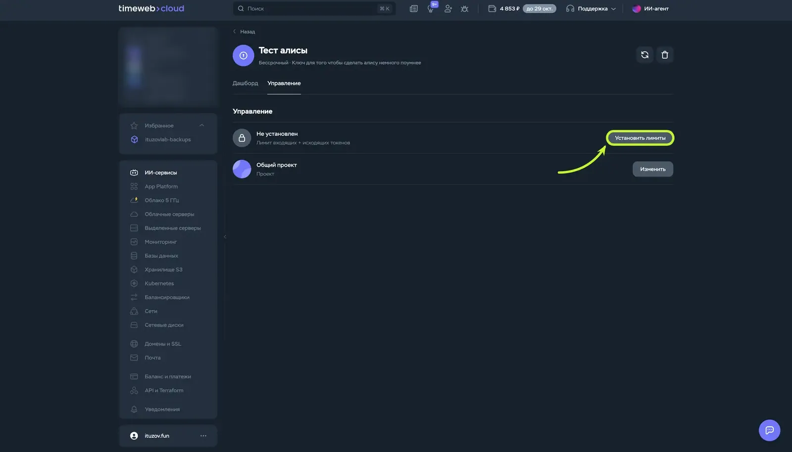
Запустите сервис
Сам сервис уже написан и лежит открыто. Вам надо только дать Timeweb ссылку на него и нажать «Заказать».
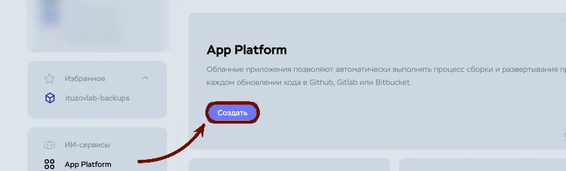

https://github.com/ituzov/ituzovlab-alice.git

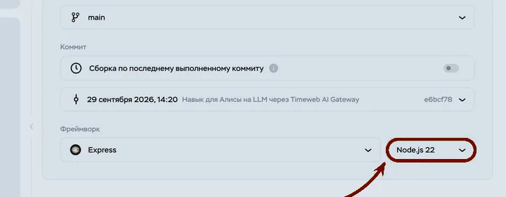
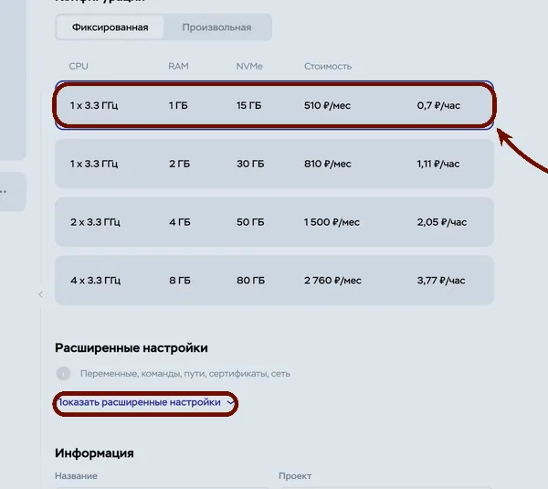

/health. Команду запуска не трогайте. Дальше Добавить у переменных.API_KEY=PASTE_KEY_HERE BASE_URL=https://api.timeweb.ai/v1 MODEL=xai/grok-4.7 REASONING_EFFORT=low

API_KEY и замените PASTE_KEY_HERE на свою строчку №1 — иначе ничего не заработает. И Сохранить.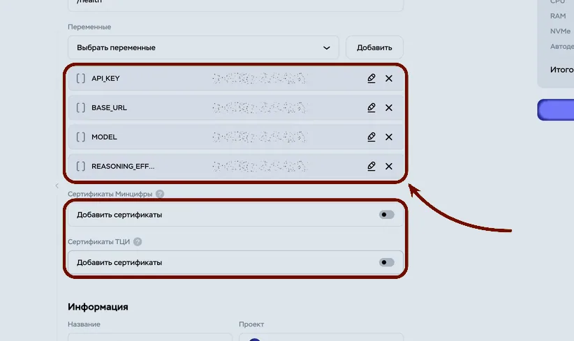
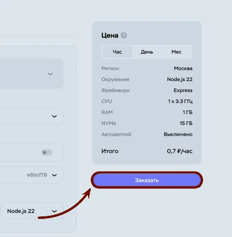
MODEL вместо той, что там стоит.Скопируйте адрес сервиса
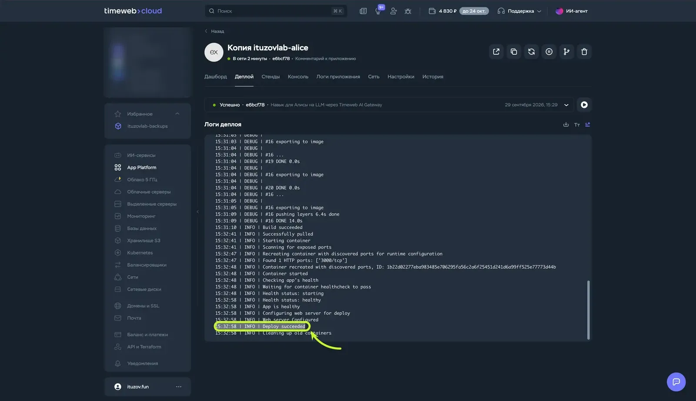
Если сборка идёт и ничего не происходит — просто подождите пару минут. Я в этот момент решила, что всё сломала, а оно собиралось)

https://. Это строчка №2.Откройте этот адрес в браузере. Если на белой странице написано ok — всё работает.
dialogs.yandex.ru
Создайте навык
Заходите на dialogs.yandex.ru/developer — тем самым аккаунтом, про который я писала в начале.
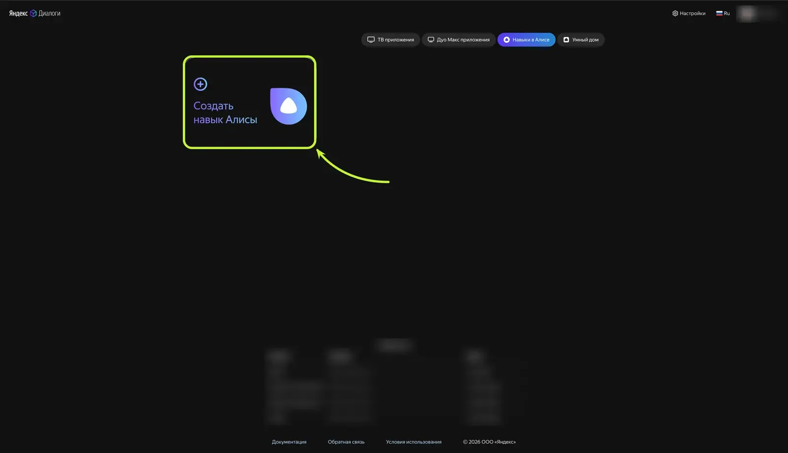


https:// в начале. Ниже тип доступа — Приватный.Я вставила адрес без https:// и полчаса думала, что всё зря. Это была единственная настоящая беда за весь вечер)
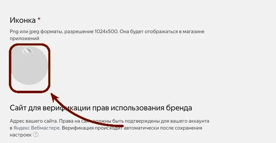
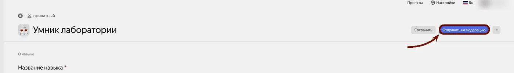

Заберите номер навыка
Остался последний перенос: надо сказать сервису, чей он. Иначе адрес открыт всему интернету и чужие вопросы пойдут за ваш счёт.
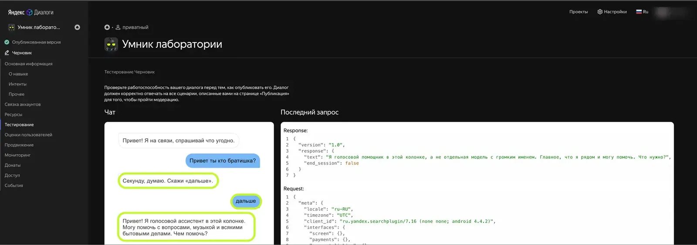

skill_id. Копируете её значение без кавычек. Это строчка №3.Возвращаетесь на timeweb.cloud, в своё приложение.


ALICE_SKILL_ID, в значение — строчку №3.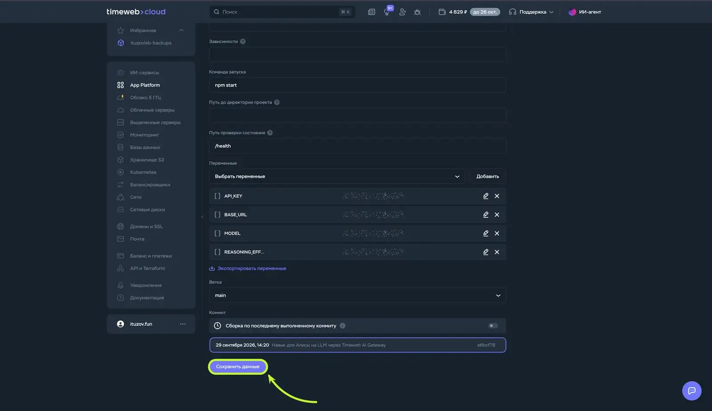
Позовите
Вместо «мой ассистент» — ваше название. Дальше говорите обычными словами.
Если Алиса ответила «Секунду, думаю» — скажите «дальше», и она дочитает ответ. Это не поломка: Алиса ждёт ответ три секунды, а нейросеть иногда думает дольше. Выйти — «хватит».
Я первым делом спросила какую-то ерунду, просто чтобы проверить, что он вообще отвечает. А потом стояла посреди кухни ещё минут сорок и забыла, зачем изначально подходила к колонке)
API_KEY на timewebWebhook URL у ЯндексаALICE_SKILL_ID на timewebSYSTEM_PROMPT — там же, где остальные, — и вставляете туда одной строкой вот это, заменив то, что в скобках«Ты мой личный ассистент. Я веду блог про [тема], моя аудитория — [кто это], пишу [тепло, на „вы", с самоиронией]. Отвечай коротко и живой речью, без списков и заголовков, это будет звучать вслух».

Три беды, и что с ними делать
https://. Ещё откройте адрес сервиса в браузере — там должно быть написано ok.Дошли до конца? Напишите, о чём первом с ним заговорили 🤍
Такие разборы я выкладываю у себя в канале — @maysoulme
Скриншоты панелей и сам сервис-посредник — из подробного разбора «Алиса с нормальным ИИ» на ituzovlab.ru. Если захочется копнуть глубже — вам туда, там есть и про выбор моделей, и разбор кода. Спасибо автору.